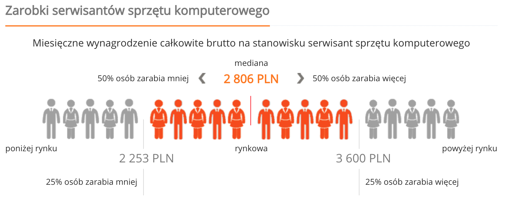
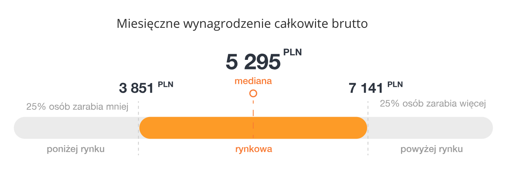
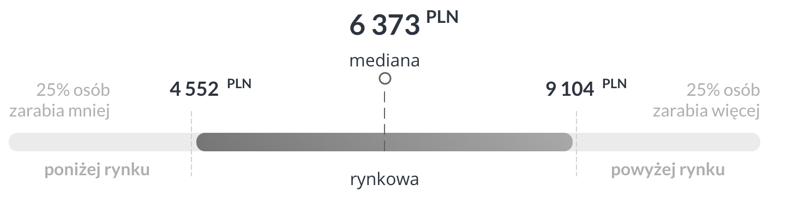

❤️ Software
Michał Wójtowicz
Senior Software Engineer
ZACZYNAMY!
Czym zajmuje się programista?
Programista zajmuje się rozwiązywaniem problemów
Czym zajmuje się programista?
- analiza wymagań
- tworzenie algorytmów
Czym zajmuje się programista?
- analiza wymagań
- tworzenie algorytmów
- implementacja algorytmów
- naprawą błędów
Co musi umieć programista? 1/2
- pisać kod
- przenosić złożone problemy na proste kroki
- pracować pod presja
- dotrzymywać terminów
Co musi umieć programista? 2/2
- oceniać zagrożenia
- szacować wpływ na wydajność
- wyszukiwać i zabezpieczać krytyczne miejsca w programie
- współtworzyć procedury
Jak zacząć?
Studia 1/2
- za darmo (dzienne)
- szerokie spektrum (zazwyczaj)
- możliwość uczestnictwa w kursach Unijnych
Studia 2/2
- program nauczania nie zawsze nadąża za rynkiem
- konieczność samodzielnej edukacji
Kursy, bootcampy 1/2
- trwają kilka tygodni
- szybki start w branży
- mocno dotrzymują tempa trendom rynku
- mentorzy
Kursy, bootcampy 2/2
- są drogie
- czas kursu wymaga dużo pracy własnej
- mocne skondensowanie materiału
Self study 1/2
- jest za darmo
- sam dostosowujesz tempo
- uczysz się tylko tego, co uznasz za potrzebne
- wymagana duża samodyscyplina
Self study 2/2
- musisz sam ocenić potrzeby rynku względem tego, aby wybrać czego się uczyć
- sam musisz wyszukać i opracować materiał
- brak mentoringu
- brak certyfikacji
Jak wygląda dzień programisty
- Kawa
- Sprawdzenie poczty
- Scrum standup
Jak wygląda dzień programisty
- Pisanie kodu
- Weryfikacja wymagań klienta
- Merytoryczne sprawdzenie kodu kolegów
- Testowanie wyniku własnej pracy, oraz pracy kolegów
- Pomoc klientom (support)
Samorozwój
IT jest najszybciej zmieniają się branżą
Programiści muszą cały czas zwiększać swoje kompetencje
Jak to robić?
- śledzenie stron o tematyce IT
- czytanie blogów innych programistów
- czytanie książek
- kursy
- meetupy, konferencje
Pieniądze
Dominanta - 2074 zł brutto
1530 zł "na rękę", czyli minimalna krajowa
Mediana - 3511 zł brutto
2511 zł "na rękę"
justjoin.it/bielsko-biala
Zarobki serwisanta IT
© wynagrodzenia.pl
Zarobki testera oprogramowania
© wynagrodzenia.pl
Zarobki programisty
© wynagrodzenia.pl